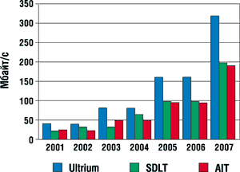
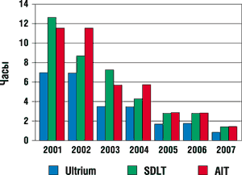
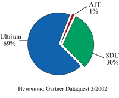
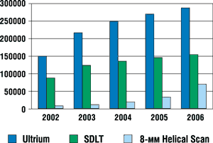

Андрей Борзенко
Современные компании считают интеллектуальную собственность своим капиталом. Бизнес в любой индустрии зависит от быстрого и надежного доступа к критическим данным. Как показали исследования, проведенные в Университете Калифорнии (Беркли, США), в современном мире за год вырабатывается от одного до двух экзабайтов уникальной информации (1-2 млрд Гбайт). В этом гигантском потоке печатные документы составляют лишь 0,003%. При этом, по данным IDC, объемы мировой информации удваиваются с каждым годом, а у Интернет-провайдеров ежегодный прирост и того больше - в десять с лишним раз.
По мере роста значимости компьютерных технологий для различных областей человеческой деятельности приходит понимание того, что жизненно важную информацию необходимо резервировать. Более того, сохранить данные в современных вычислительных системах зачастую оказывается важнее, чем их собрать.
Не только в крупных корпорациях, но и на предприятиях малого бизнеса хорошо понимают необходимость резервного копирования и восстановления информации. Результаты исследований ученых Техасского университета показали, что более 90% компаний, переживших полную (или катастрофическую) потерю данных, так и не смогли оправиться от потрясения и вернуться на рынок.
Фактически все организации стоят перед лицом угрозы потери данных. Обычно на крупных предприятиях нет такого промежутка для резервного копирования, который бы не сказывался на непрерывности работы сети. На стратегическом уровне ИТ-руководителям требуются долговечные и надежные системы с интегрированными решениями для резервирования данных, которые будут способствовать производственному росту и производительности. От подобных устройств требуется повышенная гибкость и расширяемость, они должны быть эффективными как с точки зрения стоимости, так и в плане использования пространства и совместимости с другими системами.
Повышение производительности ленточных устройств среднего и старшего класса активно стимулируется такими факторами, как развитие Интернета, распространение корпоративных интрасетей, увеличение числа серверов, необходимых для роста таких сетей, а также ужесточение требований к хранению информации и ее восстановлению в случае аварий. Спрос на системы резервного копирования и хранения данных особенно подстегивается все более активным использованием таких приложений, как мультимедиа, видео по запросу, звуковое информационное наполнение, ПО для обработки изображений и т. п.
Хранение на магнитной лентеНакопители на магнитной ленте начали применять вместе с компьютерами еще в 50-х годах. В те времена подобные устройства стали приходить на смену бумажным носителям информации - перфолентам и перфокартам. Сегодня в системах масштаба предприятия и сетях крупных департаментов обычно используются потоковые накопители, или стримеры, которые базируются на лентопротяжном механизме, работающем в инерционном режиме. Этот режим работы обладает неоспоримыми преимуществами перед "старт-стопным" при передаче больших объемов данных, так как позволяет обрабатывать ленты на значительно более высокой скорости. Кроме того, в этом случае промежутки между блоками информации могут быть очень короткими, за счет чего объем данных, хранимых на ленте фиксированной длины, увеличивается. Магнитная лента до сих пор имеет первостепенное значение как устройство длительного хранения данных. Несмотря на обилие существующих и развитие новых технологий вроде CD-RW или DVD-RAM (RW), ни одна из них не обладает пока таким преимуществом магнитной ленты, как низкая стоимость при высокой емкости.
|
Сегодня основная проблема при использовании накопителей на магнитной ленте заключается в наличии большого числа несовместимых друг с другом форматов записи. Это часто затрудняет не только выбор конкретного накопителя, но и обмен данными при его эксплуатации. Для решения этой проблемы предпринято немало усилий, но в целом можно констатировать, что кардинальных перемен пока не произошло, хотя некий прогресс в этом направлении уже есть.
Выбор системы резервного копирования в каждом конкретном случае требует анализа имеющейся информационной структуры. Как правило, следует учитывать объемы данных, подлежащих резервированию, максимальную емкость картриджа, стоимость хранения 1 Мбайт и критичность временного фактора в процессах резервирования и восстановления информации.
Технология LTO
Еще в ноябре 1997 г. три крупнейшие компании, выпускающие накопители на магнитной ленте, - IBM (http://www.ibm.com), Hewlett-Packard (http://www.hp.com) и Seagate Technology (http://www.seagate.com), - объявили о заключении соглашения, предусматривающего создание новой технологии для стримеров, применяемых в больших компьютерных системах. Эта технология должна была базироваться на некой открытой спецификации используемого формата записи. В перспективе такой подход, по мнению договаривающихся сторон, позволял:
- обеспечить массовое производство совместимых носителей данных от разных производителей;
- организовать реальный обмен носителями данных между накопителями разных производителей;
- обеспечить масштабируемое наращивание производительности накопителей;
- расширить диапазон создаваемых накопителей - от устройств для одиночного сервера до систем для сетей масштаба предприятия;
- облегчить адаптацию накопителей к технологическим новшествам;
- обеспечить защиту инвестиций OEM-партнеров и клиентов
Каждый из участников триумвирата пообещал, что при разработке новой технологии использует свои знания о пользовательских потребностях и, разумеется, самые последние ноу-хау.
И вот в апреле 1998 г. была приоткрыта завеса над новой технологией, получившей название LTO (Linear Tape Open). Она объединила преимущества линейных многоканальных двунаправленных форматов записи с улучшенными показателями сервосистемы, компрессии данных, размещения дорожек, коррекции ошибок, производительности и надежности. Особенностями новой технологии была многоканальная серпантинная запись с высокой плотностью (до 100 Мбит/кв. дюйм).
На LTO-технологии базируются два формата - Ultrium и Accelis. Это связано с тем, что пользователи предъявляют разные требования к системам хранения данных. Для одних важнее всего интенсивное чтение, т. е. максимально быстрый доступ к требуемым данным (например, в случае организации крупных библиотек на базе накопителей на магнитной ленте). В этих случаях оптимален формат Accelis. Для других пользователей более значима возможность вести интенсивную запись, т. е. заполнять большие объемы памяти с максимальной скоростью. Примером такой задачи может служить резервирование информации с дисковых накопителей (backup). Для этих целей более подходит формат записи Ultrium.
При использовании технологии LTO полная ширина ленты делится на несколько более узких областей. Количество их зависит от типа формата: для Ultrium выделяется четыре области, а для Accelis две. Блок головок одновременно охватывает только одну из имеющихся областей и заполняет их последовательно. На верхней и нижней границах каждой области данных записывается сервоинформация.
Форматы Ultrium и Accelis предусматривают использование одинаковых магниторезистивных головок и сервосистем, а также единую конструкцию отдельных механических и электронных блоков. Однако для достижения большей емкости в Ultrium применяется более широкая лента.
В формате Accelis предполагается двухкатушечный картридж, начальная загрузка которого выполняется при установке блока головок на половине длины ленты. Это позволяет уменьшить среднее время доступа к данным примерно до 10 с. Конструкция картриджа, предусматривающая применение полностью закрытой ленты, предотвращает ее преждевременный износ. Общее количество дорожек на 8-миллиметровой ленте составит 256 - по 128 в каждой области. В первом поколении Accelis-совместимых устройств предполагалось использовать картриджей с длиной магнитной ленты до 218 м. Емкость такого картриджа должна составлять 25 Гбайт (50 Гбайт с компрессией данных), скорость передачи данных для 4-канальной записи может достигать 5-10 Мбайт/с, а для 8-канальной - 10-20 Мбайт/с. При компрессии данных скорость передачи возрастает примерно вдвое. Предполагаемые технические характеристики четырех поколений Accelis-совместимых устройств приведены в табл. 1. К сожалению, до сих пор устройства на базе данного формата не производятся.
Таблица 1. Поколения формата Accelis
| Параметр | Поколение 1 | Поколение 2 | Поколение 3 | Поколение 4 |
| Емкость, Гбайт | 25 | 50 | 100 | 200 |
| Скорость передачи данных, Мбайт/с | 10-20 | 20-40 | 40-80 | 80-160 |
| Метод записи | RLL 1,7 | PRML | PRML | PRML |
| Время доступа, с | 10 | 8 | 7 | 7 |
Формат Ultrium предусматривает использование однокатушечного картриджа размером 105х102х21 мм - это меньше, чем у любого подобного картриджа, используемого сегодня в индустрии. На ленте есть место для 384 дорожек данных, распределенных на четыре области по 96 дорожек. С самого начала предполагалось, что первое поколение Ultrium-совместимых устройств будет 8- или 4-канальным. В последнем случае скорость передачи данных не превышала бы 5-10 Мбайт/с. В дальнейшем планировалось увеличение количества каналов до 16. Предполагаемые технические характеристики четырех поколений Ultrium-совместимых устройств приведены в табл. 2.
Таблица 2. Поколения формата Ultrium
| Параметр | Поколение 1 | Поколение 2 | Поколение 3 | Поколение 4 |
| Емкость, Гбайт | 100 | 200 | 400 | 800 |
| Скорость передачи данных, Мбайт/с | 10-20 | 20-40 | 40-80 | 80-160 |
| Метод записи | RLL 1,7 | PRML | PRML | PRML |
| Материал носителя | Металлический порошок | Металлический порошок | Металлический порошок | Тонкая пленка |
Стоит особо отметить, что высокая целостность данных при записи достигается благодаря двухуровневой коррекции ошибок. Алгоритм контроля и коррекции ошибок обеспечивает надежное восстановление информации даже при потере данных одной из восьми дорожек. Кроме того, существует возможность чтения во время записи (технология Read While Write, RWW), что позволяет выполнять верификацию данных в реальном масштабе времени. Динамическая перезапись сбойных блоков обеспечивает качественное копирование информации даже при выходе из строя одной или нескольких головок.
Объединение двух сервосистем гарантирует (за счет избыточности) нормальное функционирование накопителя даже в случае выхода из строя одной из них или повреждения части сервоинформации, записанной на магнитной ленте.
В картриджи Ultrium встраивается специальный модуль LTO-CM (LTO Cartridge Memory), который содержит 4 Кбайт энергонезависимой памяти. В ней может храниться не только служебная, но и записанная самим пользователем информация. Чтение этой информации осуществляется бесконтактно через радиочастотный интерфейс на специальном дополнительном устройстве.
Все компании, входящие в консорциум LTO, выпустили собственные базовые модели Ultrium-устройств. У IBM это LTO Ultrium Drive, у Hewlett-Packard - SureStore Ultrium, у Seagate Technology - Viper. Это достаточно мощные устройства: например, картридж накопителя типа HP SureStore Ultrum 230 вмещает до 200 Гбайт данных, а скорость чтения-записи у него составляет 30 Мбайт/с. Другой продукт из этой серии, HP SureStore Ultrum 215, выполнен в конструктиве в половину стандартной высоты и работает с вдвое меньшей скоростью чтения-записи. Вообще говоря, спецификация и система сертификации LTO гарантируют, что ленты, записанные любым устройством LTO, таким, как IBM UltraScalable Tape Library или Seagate Viper 200, можно считывать при помощи HP SureStore Ultrium 230, и наоборот. Надо отметить, что у каждой компании сложился собственный подход к реализации технологии. Если IBM ориентируется главным образом на предприятия, для которых важна емкость картриджей, то Нewlett-Рackard намерена сделать новую технологию доступной для более широкого круга задач.
Накопители Ultrium в значительной степени расширяют возможности ленточных устройств хранения, это касается и надежности, и емкости, и производительности. Такие характеристики отвечают самым жестким требованиям к обслуживанию резервного копирования данных с мощных сетевых серверов. По мнению экспертов, компании могут смело вкладывать деньги в приобретение подобных устройств, будучи уверенными в том, что весь спектр их потребностей в хранении данных будет охвачен не только на текущий момент, но и в ближайшем будущем.
Технологии DLT и SuperDLT
Известно, что технология LTO была разработана в первую очередь как альтернатива конкурирующей технологии Quantum SuperDLT, которая лежит в основе соответствующего формата DLT/SuperDLT.
Историю развития технологии DLT обычно ведут с 1984 г., когда при разработке системы резервного хранения данных компьютера MicroVAX II инженеры решили объединить преимущества накопителей с катушками на полудюймовой ленте, используемых в мэйнфреймах, и систем, в которых применялись носители в виде картриджей. В качестве сменного носителя для новой системы они предложили небольшой картридж, в котором, в отличие от известных уже картриджей QIC, была только одна катушка с лентой. Роль приемной катушки исполнял механизм самого привода, что позволило сэкономить место в картридже и благодаря этому значительно увеличить длину ленты.
В основе устройства DLT лежит многоканальный метод доступа к ленте: высокая скорость работы достигается за счет одновременного чтения или записи нескольких головок устройства. Так, при двухканальной записи производительность реально увеличивается вдвое, а при четырехканальной - в четыре раза. В DLT была усовершенствована также схема поиска данных на ленте. Все файлы индексируются, сведения о них хранятся на ленте и считываются в память после установки картриджа. Формат записи на ленту позволяет очень быстро находить архивные файлы.
Большая емкость ленты DLT объясняется несколькими основными причинами. Во-первых, в данной технологии используется полудюймовая лента (13 мм) вместо 4- и 8-миллиметровых, предусмотренных в других стандартах. Во-вторых, лента практически полностью заполняет картридж. В отличие от накопителей с 4- и 8-миллиметровыми лентами, которые имеют две катушки (одна из них пустая), у картриджа DLT только одна катушка (причем полная). Вторая находится внутри самого устройства DLT. Она подхватывает конец ленты, как это делает обычный катушечный магнитофон.
Современные DLT-стримеры построены по технологии Symmetric Phase Recording (SPR). Разный угол наклона магнитного зазора головки при записи соседних треков позволяет существенно уменьшить взаимные магнитные помехи между соседними дорожками, благодаря чему удается сократить зазор между ними.
В DLT-устройствах применяется также уникальная многоуровневая схема обнаружения и коррекции ошибок. Каждые 64 Кбайт данных на ленте сопровождаются 16-килобайтным ЕСС-кодом Рида - Соломона. В свою очередь для каждых 4 Кбайт данных предусмотрен 16-разрядный избыточный циклический код (CRC) и 16-битовый код обнаружения ошибок (EDC). Кроме того, все логические записи сопровождаются 16-разрядным кодом CRC. Для обеспечения целостности информации записываемые данные сразу же считываются головкой чтения и сравниваются с поступившими от компьютера. При обнаружении несоответствий фрагмент немедленно заносится на следующий участок ленты.
На производительности стримеров также сильно сказывается сбалансированность внутренней и внешней скоростей передачи данных. Если система не в состоянии обработать поступающие со стримера данные, привод будет останавливаться. Справиться с проблемой помогает использование высокоскоростных интерфейсов SCSI и наличие большого адаптивного буфера.
Главная особенность SuperDLT - технология Laser Guided Magnetic Recording (LGMR). Данные в SuperDLT пишутся на одной стороне магнитной ленты, а информация о положении головок чтения-записи - на обратной. Благодаря использованию лазера удается очень точно позиционировать головки и соответственно очень близко располагать дорожки на ленте. Еще одной инновацией SuperDLT стала система синхронизации POS (Pivoting Optical Servo), которая будет работать со встроенной серводорожкой, нанесенной на ленту еще в процессе производства, что исключает необходимость переформатирования ленты. Кроме того, к базовым технологиям, примененным в SuperDLT, можно отнести AMP (Advanced Metal Powder, применение металлического порошка, обеспечивающего запоминание больших объемов данных); MRC (Magneto Resistive Cluster, кластер магниторезистивных головок) и ERP (Enhanced Partial Responce, усовершенствованный вариант метода Partial Response Maximum Likelihood, или PRML, разработанного Quantum совместно с Lucent/Bell Labs).
Отметим, что магниторезистивная головка считывания представляет собой резистор, сопротивление которого меняется в зависимости от напряжения магнитного поля, причем амплитуда сигнала практически не зависит от скорости изменения поля. Это позволяет намного надежнее считывать информацию с ленты и в результате значительно повысить предельную плотность записи. Основной недостаток индуктивных головок - сильная зависимость амплитуды сигнала от скорости перемещения магнитного покрытия и высокий уровень шумов, затрудняющий обнаружение слабых сигналов.
В свою очередь метод PRML (максимальное правдоподобие при неполном отклике) основан на ряде положений теории распознавания образов. Для обеспечения надежности при традиционном декодировании амплитуда, частота или фаза считываемого сигнала должны значительно меняться. В частности, при записи подряд двух или более совпадающих разрядов их приходилось специальным образом кодировать, что снижало плотность записи. В методе PRML для декодирования применяются шаблоны, с которыми сравнивается считанный сигнал. Это позволяет повысить плотность записи данных на 30-40%.
Благодаря тому, что магнитное кодирование данных осуществляется на одной стороне ленты, а лазерное кодирование служебной информации - на другой (для позиционирования ленты и контроля скорости), отпала необходимость в оснащении системы отдельной магнитной головкой для управления перемещением ленты. Головки объединяются в группы (кластеры), что позволяет резко повысить емкость ленты.
Особо следует сказать о встроенном микропрограммном обеспечении. Оно управляет такими важными функциями и параметрами, как коммуникации по шине SCSI, обнаружение и коррекция ошибок, сжатие данных, скорость ленты, форматирование данных. Кроме того, микропрограммное обеспечение реализует функции протокола SCSI (включая сообщения, команды и параметры).
На одном картридже для модели Quantum Super DLTtape 320 хранится 160 Гбайт данных в неуплотненном виде (320 Гбайт с компрессией), а скорость передачи данных достигает 16 Мбайт/с (32 Мбайт/с с компрессией).
Ultrium против SuperDLT
Войны форматов в области накопителей на магнитных лентах не новы. Обе технологии (SuperDLT и LTO), обеспечивающие высокую емкость и производительность, предназначались в первую очередь для B2B-порталов, а также крупных компаний, входящих в список Fortune 500. В пользу Quantum свидетельствует успех предыдущих DLT-устройств. Кроме того, из триумвирата LTO только Seagate Technology не производит DLT-стримеров. Более того, аналитики из Dataquest/Gartner Group полагают, что в самое ближайшее время конкуренция между учредителями LTO существенно обострится, поскольку все они начнут выпуск продукции, нацеленной на один и тот же сегмент рынка.
Но и у консорциума LTO есть свои козыри. SuperDLT пока остается уникальной фирменной технологией, а Quantum - единственным изготовителем соответствующих устройств. LTO, напротив, - открытая архитектура, доступная для лицензирования всем. Кроме трех основателей консорциума изготавливать LTO-накопители будут и другие участники рынка, а еще несколько фирм займутся выпуском носителей.
Правда, LTO включает несколько форматов, ни один из которых не совместим с представленными сегодня на рынке. А вот технология SuperDLT обратно совместима с огромным количеством проданных ранее DLT-приводов и картриджей. Это обеспечивает безболезненную модернизацию нынешнего парка техники, причем совместимость с существующими DLT-лентами означает, что записанные сегодня картриджи можно будет считать и завтра.
Устройства, использующие формат Ultrium, превосходят по скорости конкурентов на базе SuperDLT, а значит, обладают лучшим отношением цена/производительность (рис. 1, 2).
|  | Рис. 1. Скорость передачи данных в разных форматах.
|
|  | Рис. 2. Время резервирования 1 Гбайт данных в разных форматах.
|
Обе технологии предлагают хранение различной служебной информации в специальной области памяти картриджа. Картриджи для SuperDLT сохраняют эту информацию непосредственно на магнитной ленте, в результате чего при частичном повреждении ленты данные будут утеряны. В рамках LTO картриджи используют встроенную энергонезависимую память с бесконтактной радиочастотной передачей, что, в свою очередь, исключает необходимость в каком-либо физическом соединении или питающем элементе внутри картриджа. Кроме того, возможность быстрого доступа к информации в энергонезависимой памяти значительно увеличивает скорость загрузки - не требуется чтение с ленты (сравнительно медленное). К тому же в данной памяти сохраняется служебная информация об используемом пространстве, событиях и ошибках.
Одно из ключевых стратегических преимуществ консорциума LTO заключается в публикации сетевого графика (roadmap) развития технологии Ultrium на ближайшее будущее. Наличие таких планов наглядно демонстрирует перспективность и технологичность продукта - участники рынка видят, как загодя планируется развитие технологии. Правда, в конце прошлого года Quantum также приоткрыла свои планы относительно развития семейств ленточных накопителей. В частности, она предполагает поддерживать две линейки стримеров - экономичную Value и высокопроизводительную Super. Именно последняя должна составить конкуренцию накопителям LTO. Летом будет анонсирована модель Super DLT600, емкость картриджа для которой достигнет 300 Гбайт, а скорость передачи - 32 Мбайт/с.
По данным Gartner Dataquest, на LTO-накопители в 2001 г. пришлось почти 70% мировых продаж, в то время как приводы SuperDLT занимали около 30% рынка (рис. 3). Прогноз состояния рынка на ближайшие годы приведен на рис. 4.
|  | Рис. 3. Доли рынка различных форматов.
|
|  | Рис. 4. Прогноз продаж накопителей с картриджами емкостью более 100 Гбайт.
|
Заключение
Производители носителей и систем хранения данных могли получить лицензии на технологию LTO Ultrium второго поколения еще с января 2002 года. А уже осенью прошлого года компания Hewlett-Packard первой в индустрии (по ее утверждению) начала поставлять своим партнерам опытные образцы ленточных накопителей Ultrium второго поколения (HP StorageWorks Ultrium 460). Эти устройства обладают повышенным быстродействием и емкостью - так, они позволяют сохранять сжатые данные на картриджи размером 400 Гбайт, причем время заполнения такого картриджа составляет менее 2 ч. В связи со слиянием с Compaq новые устройства носят теперь название StorageWorks.
Технологии резервного хранения информации продолжают совершенствоваться. Несмотря на все достижения в области повышения надежности и обработки ошибок, дальнейшие улучшения здесь по-прежнему необходимы. Немало усилий требует увеличение скорости ленточных накопителей в соответствии с сегодняшними стандартами; необходимо также повышение интеллектуального уровня устройств и совершенствование средств управления ими.